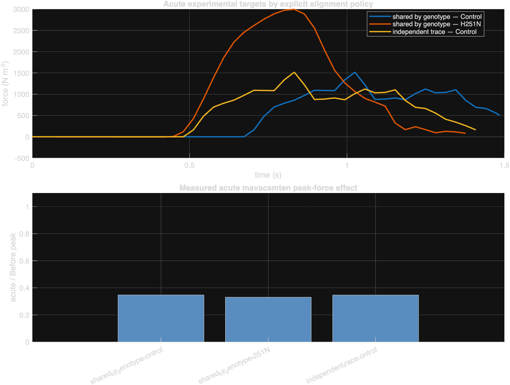
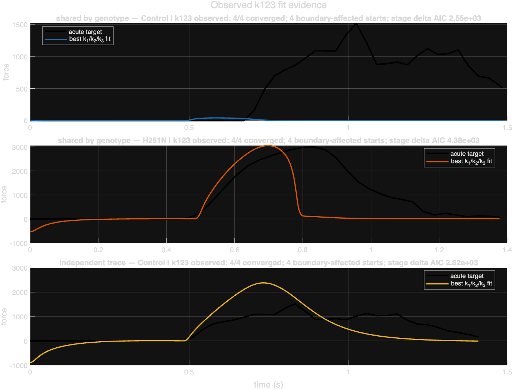
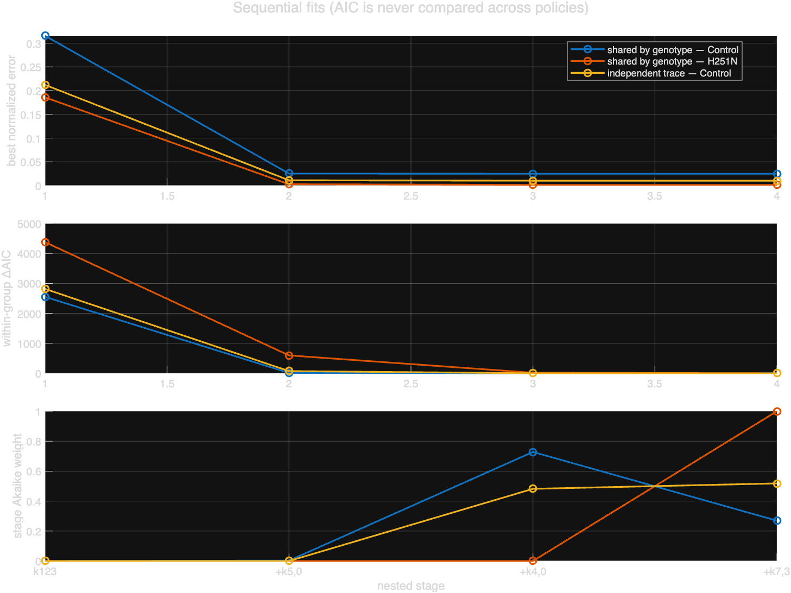
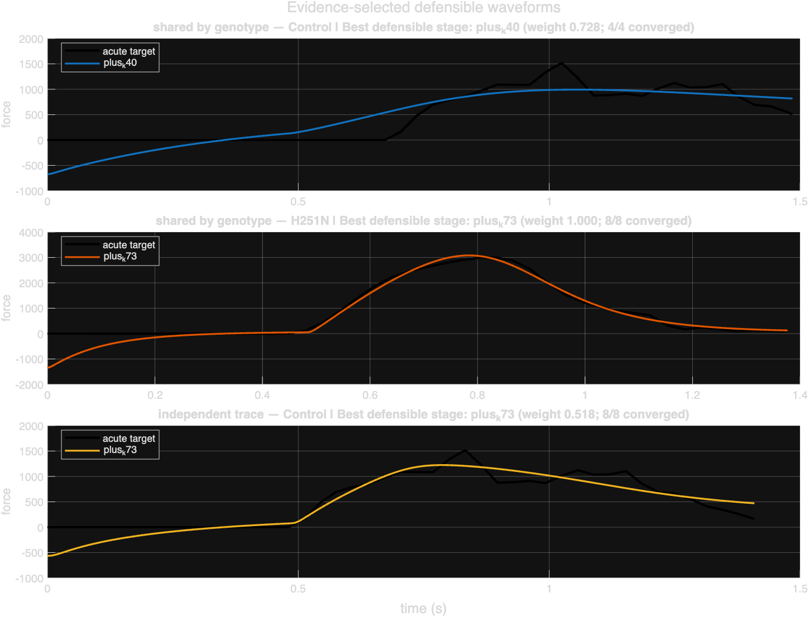
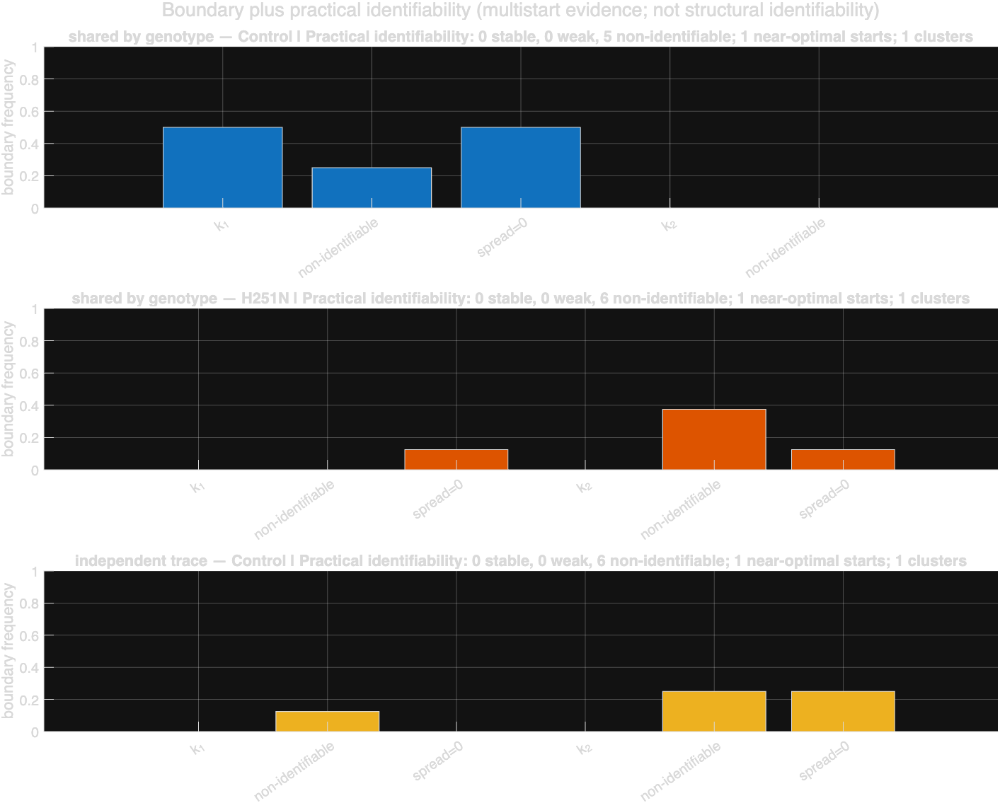

PI meeting — September 14, 2026
Authoritative run: mava_seq_20260908_v2 · 60 completed fits
k_5_0 to decrease produces the dominant fit improvement, although exact parameter magnitudes remain practically non-identifiable.| Genotype | Before peak (N/m²) | Acute peak (N/m²) | Acute / Before | 24 h peak (N/m²) | 24 h / Before |
|---|---|---|---|---|---|
| Control | 4,367.66 | 1,516.41 | 34.7% | 2,004.62 | 45.9% |
| H251N | 9,055.37 | 2,994.61 | 33.1% | 4,828.25 | 53.3% |
The optimization fits the acute traces. The 24-hour values provide descriptive evidence of partial recovery but were not fitted.

Figure 1. Acute experimental traces and measured force suppression. Control has a large alignment-dependent timing shift.
The stored optimization error is squared normalized RMSE. The percentages below are NRMSE = √error. AIC is compared only within the same genotype and alignment policy.
| Group | Stage | Treatment parameters | NRMSE | AIC | AIC improvement |
|---|---|---|---|---|---|
| Control, shared timing | k123 | k_1, k_2, k_3 | 56.2% | -1,154.62 | — |
plus_k50 | previous + k_5_0 | 15.9% | -3,695.12 | 2,540.50 | |
plus_k40 | previous + k_4_0 | 15.8% | -3,706.38 | 11.26 | |
plus_k73 | previous + k_7_3 | 15.8% | -3,704.39 | -1.99 | |
| H251N, shared timing | k123 | k_1, k_2, k_3 | 43.1% | -1,505.60 | — |
plus_k50 | previous + k_5_0 | 5.24% | -5,287.85 | 3,782.25 | |
plus_k40 | previous + k_4_0 | 3.79% | -5,866.21 | 578.36 | |
plus_k73 | previous + k_7_3 | 3.75% | -5,883.95 | 17.75 | |
| Control, independent timing | k123 | k_1, k_2, k_3 | 46.1% | -1,436.24 | — |
plus_k50 | previous + k_5_0 | 10.5% | -4,180.50 | 2,744.26 | |
plus_k40 | previous + k_4_0 | 10.1% | -4,253.04 | 72.53 | |
plus_k73 | previous + k_7_3 | 10.1% | -4,253.18 | 0.15 |
k123 is inadequate in all three groups.k_5_0 produces the dominant improvement in every group.k_4_0 is supported, particularly in H251N and independently aligned Control.k_7_3 is supported in H251N only. It is unsupported in shared Control and adds negligible evidence in independently aligned Control.
Figure 2. The three-rate model fails to reproduce the acute response.

Figure 3. Sequential changes in normalized error, within-group ΔAIC, and Akaike weight.
| Group | Selected stage | NRMSE | Model peak error | Target vs model Ca-to-force lag | Target vs model FWHM |
|---|---|---|---|---|---|
| Shared Control | plus_k40 | 15.8% | -34.5% | 208 vs 0 ms | 608 ms vs unavailable |
| Shared H251N | plus_k73 | 3.75% | +2.8% | 4 vs 18 ms | 385 vs 378 ms |
| Independent Control | plus_k40/plus_k73 | 10.1% | -19.2% | 15 vs 0 ms | 608 vs 676 ms |

Figure 4. H251N is fitted extremely well. Control remains underpredicted and depends strongly on the alignment policy.
| Group | k_1 | k_2 | k_3 | k_5_0 | k_4_0 | k_7_3 |
|---|---|---|---|---|---|---|
Shared Control, plus_k40 | 0.137× | 1.26× | 10.0× | 0.170× | 0.637× | — |
Shared H251N, plus_k73 | 0.267× | 0.627× | 7.10× | 0.229× | 10.0× | 0.622× |
Independent Control, plus_k73 | 3.97× | 10.0× | 0.392× | 0.400× | 0.100× | 0.889× |
k_5_0. Other estimates change sharply with alignment and optimizer basin. Free k_2 is diagnostic only and conflicts with the standard constraint k_2 = 10 × k_1.k_3 = 10× boundary.k_4_0 = 10× boundary.k_2 = 10× and k_4_0 = 0.1×.
Figure 5. Practical multistart identifiability diagnostics. These are not structural-identifiability results.
k_2 = 10 × k_1 constraint?Acute mavacamten reduced peak force to 34.7% of baseline in Control and 33.1% in H251N. Models permitting changes only in SRX/DRX exchange and attachment kinetics failed to reproduce the acute waveforms. Allowing the forward power-stroke parameter k_5_0 to decrease produced the dominant AIC improvement in every analysis. Exact kinetic fold changes remain practically non-identifiable, and the Control result depends on unresolved stimulus-time alignment.